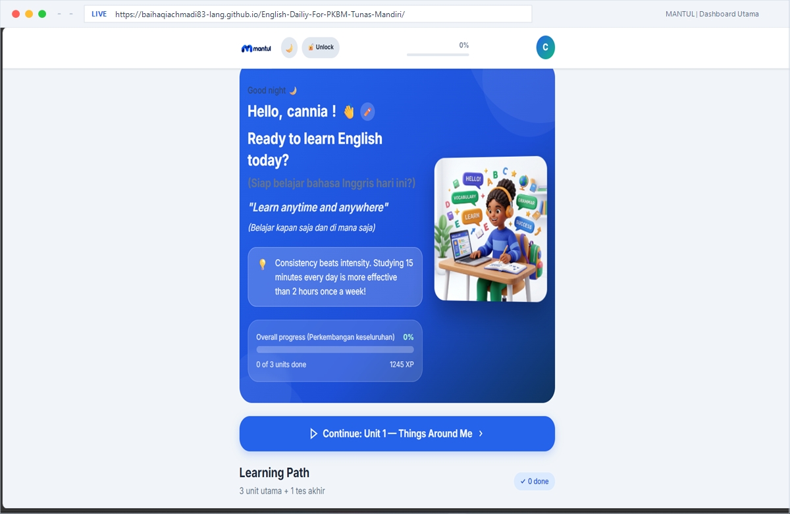

BERANDA // PROFIL
Annuril Baihaqi Achmadi
Education, Research & Digital Learning
Saya memadukan latar belakang pendidikan bahasa Inggris dengan riset pendidikan, desain pembelajaran, dan pengembangan media digital untuk menciptakan pengalaman belajar yang relevan, interaktif, dan mudah diakses.
Pendidikan Bahasa Inggris · Universitas Nahdlatul Ulama Yogyakarta · Lulus 2026
Pengembangan Konten Pembelajaran Digital
PROFILE // TENTANG SAYA
Tentang Saya
Saya Annuril Baihaqi Achmadi, lulusan Pendidikan Bahasa Inggris Universitas Nahdlatul Ulama Yogyakarta tahun 2026. Saya berfokus pada riset pendidikan, desain pembelajaran, dan pengembangan media digital.
Melalui penelitian skripsi dan proyek pembelajaran, saya memperoleh pengalaman dalam analisis kebutuhan, penyusunan materi, pengumpulan dan analisis data, serta perbaikan produk berdasarkan masukan ahli dan pengguna.
Riset Pendidikan
Mengidentifikasi kebutuhan melalui observasi, wawancara, dan kajian literatur.
Analisis & Evaluasi
Menganalisis tema wawancara dan persentase penilaian ahli untuk perbaikan produk.
Desain Pembelajaran
Menyusun tujuan, materi, dan aktivitas belajar sesuai kebutuhan peserta didik.
Media Digital
Mengembangkan media web/mobile serta memanfaatkan AI dengan pemeriksaan hasil.
WORKS // PROYEK
Proyek & Riset
Proyek pengembangan konten pembelajaran digital, media web, dan desain pembelajaran untuk konteks pendidikan nonformal.
PROYEK 1 — PRODUK SKRIPSI
Selesai dikembangkan · Validasi ahli · Uji coba terbatasMANTUL: Mandiri Tunas English Learning
Produk skripsi pembelajaran bahasa Inggris untuk peserta didik Paket C di PKBM Tunas Mandiri, Wonosobo.

Materi Pembelajaran
Vocabulary, speaking, dan reading melalui materi serta latihan interaktif.
Proses Penelitian
Analisis kebutuhan, pengembangan dengan kerangka Jolly dan Bolitho, validasi ahli, uji coba terbatas, serta revisi.
Kontribusi Saya
Merancang materi dan produk, mengumpulkan serta menganalisis data wawancara, dan mengolah penilaian ahli.
Hasil Validasi
Penilaian satu ahli: materi 77,5%, media 80,0%, dan keseluruhan 78,6%. Kategori: layak dengan revisi kecil.
Mengukur kelayakan produk; efektivitas hasil belajar belum diuji.
Temuan dan masukan dari pengembangan awal menjadi dasar perencanaan MANTUL 2.0.
PROYEK 2 — RENCANA PENGEMBANGAN
Rencana Pengembangan · Belum DilaksanakanMANTUL 2.0: Mobile Access for Nonformal Teaching and Ubiquitous Learning
Rencana pengembangan lanjutan dari produk skripsi MANTUL. Semua sasaran dan tahapan berikut masih berupa rencana.
Target peserta (rencana)
Sedikitnya 100 peserta didik Paket C.
Lokasi sasaran (rencana)
PKBM Tunas Mandiri, Wonosobo, dan PKBM Bina Karya, Yogyakarta.
Durasi rencana
Sekitar tiga bulan, termasuk program pembelajaran enam minggu.
Rencana Pengembangan MANTUL 2.0
-
Tinjau Temuan Awal
Menelaah masukan pengguna dari uji coba produk pertama.
-
Sempurnakan Platform
Memperbaiki keandalan teknis, kompatibilitas perangkat, navigasi, dan dukungan speaking.
-
Siapkan Peserta & Tutor
Mengenalkan platform, alur belajar, dan peran pendamping.
-
Belajar selama 6 Minggu
Misi praktis mingguan secara mandiri dengan pendampingan ringan tutor.
-
Evaluasi Program
Menilai partisipasi, penyelesaian, perkembangan belajar, dan pengalaman pengguna.
-
Susun Panduan
Mendokumentasikan model pelaksanaan untuk dapat diadaptasi PKBM lain.
COMPETENCIES // KEAHLIAN
Keahlian
Keterampilan yang saya kembangkan melalui penelitian akademik, perancangan pembelajaran, dan pengembangan media digital.
Riset & Penulisan Akademik
Melakukan kajian literatur, menyusun instrumen observasi dan wawancara, serta menulis laporan penelitian secara sistematis.
Analisis Data & Evaluasi
Mengelompokkan temuan wawancara berdasarkan tema dan menghitung persentase penilaian ahli untuk mendukung evaluasi serta perbaikan produk.
Desain Pembelajaran
Menyusun tujuan, materi, aktivitas, dan asesmen pembelajaran secara terstruktur berdasarkan kebutuhan peserta didik.
Pengembangan Media Digital
Mengembangkan media pembelajaran berbasis web dengan bantuan teknologi dan AI, serta meninjau konten dan menguji fungsinya.
EXPERIENCE // PENGALAMAN
Pengalaman
Pengalaman dalam pengajaran bahasa Inggris, dukungan administrasi pendidikan, dan komunikasi hasil penelitian.
MA Ali Maksum
Mengajar kelas Beginner dan Intermediate dalam Program Unggulan MA Ali Maksum. Menjelaskan materi dan memberikan latihan sesuai tingkat kemampuan peserta didik.
SMP Muhammadiyah 8 Yogyakarta
Mengampu ekstrakurikuler English Conversation melalui latihan percakapan sehari-hari, kosakata, pelafalan, dan aktivitas berbicara interaktif.
PKBM Tunas Mandiri
Mendukung pembelajaran, pendampingan peserta didik, serta tugas administrasi dan operasional lembaga sesuai penugasan.
Konferensi Internasional INSIMA
Mempresentasikan penelitian pengembangan MANTUL dan meraih penghargaan Best Presenter bersama Khusnul Harsul Lisan.
EDUCATION // PENDIDIKAN
Pendidikan
PENDIDIKAN TINGGI
Universitas Nahdlatul Ulama Yogyakarta
S1 Pendidikan Bahasa Inggris · Sarjana Pendidikan (S.Pd.)
2022–2026 · Lulus
Fokus Penelitian Skripsi
Pengembangan modul pembelajaran bahasa Inggris berbasis mobile untuk peserta didik Paket C di PKBM Tunas Mandiri. Penelitian mencakup analisis kebutuhan, pengembangan materi dan media, validasi ahli, serta uji coba terbatas.
Lihat Proyek MANTULMinat Riset & Pengembangan
- Pendidikan Bahasa
- Riset dan Evaluasi Pembelajaran
- Teknologi Pendidikan
- Desain Pembelajaran
- AI dalam Pendidikan
CONNECT // KOMUNIKASI
Kontak
Mari Berdiskusi & Berkolaborasi
Saya terbuka untuk peluang magang, pekerjaan, dan kolaborasi dalam pendidikan, riset, serta pengembangan pembelajaran digital. Silakan hubungi saya untuk berdiskusi lebih lanjut.